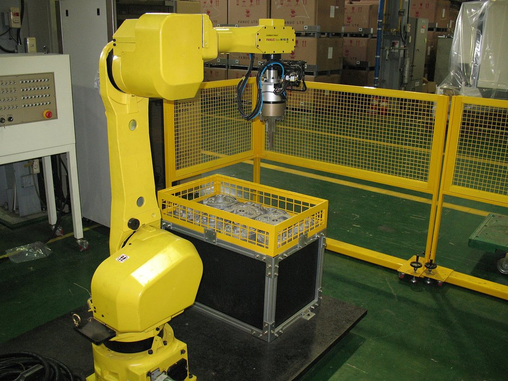
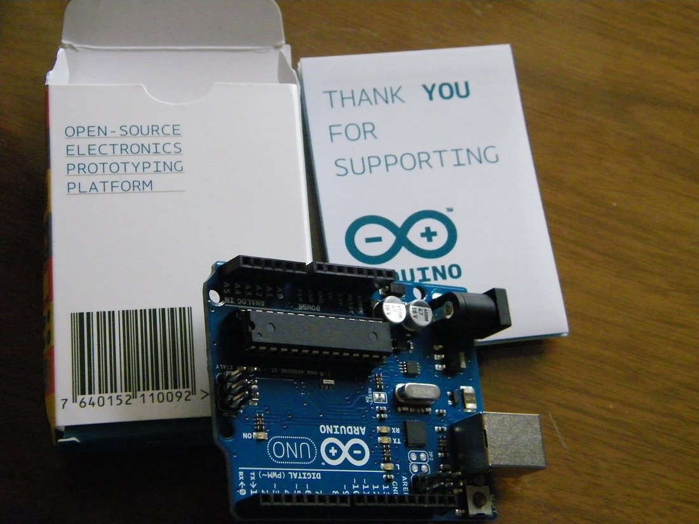
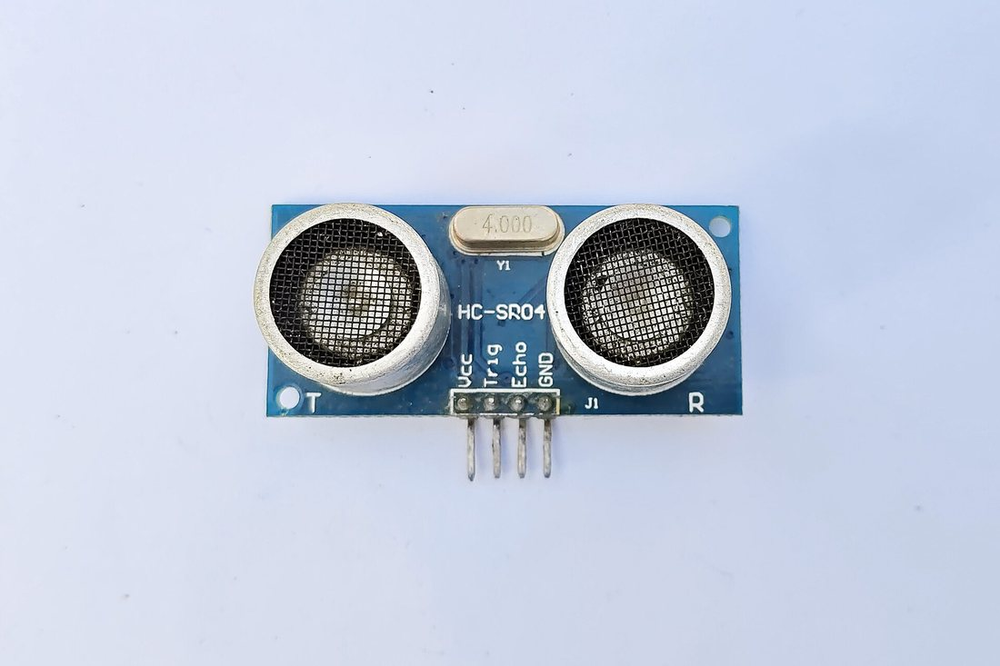
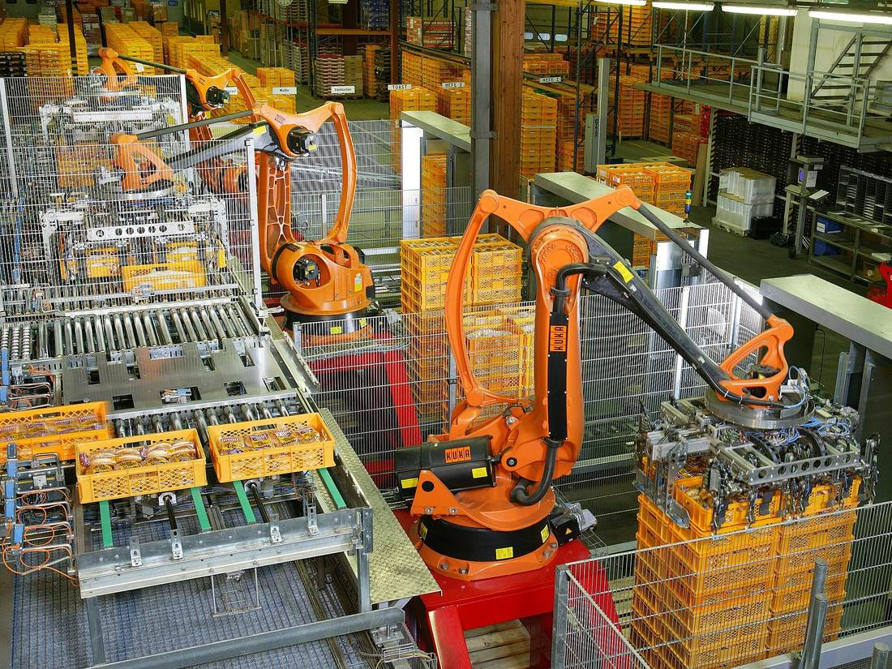
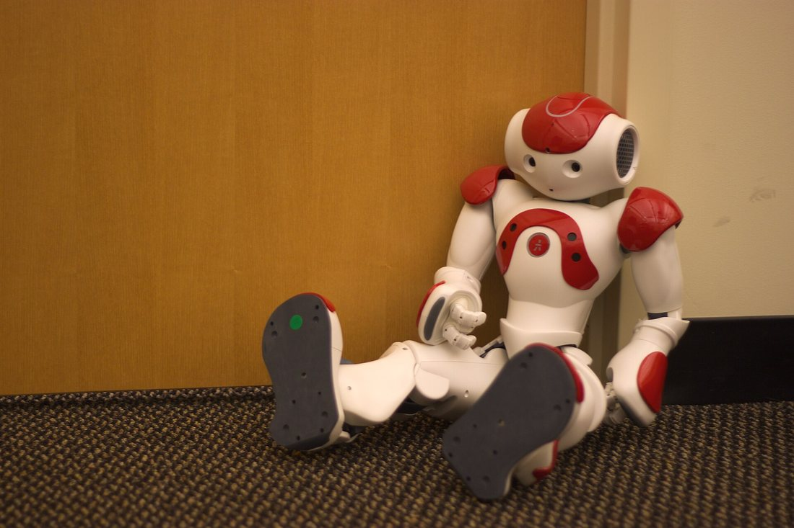

Көркем еңбек (ұлдар) · 4-бөлім · Машина және электротехника Art & Craft (Boys) · Section 4 · Machines & Electrics Художественный труд (мальчики) · Раздел 4 · Машины и электротехника
🤖 Робототехника және автоматика негіздері
🤖 Basics of Robotics and Automation
🤖 Основы робототехники и автоматики
Робот қалай ойлайды, сезінеді және қозғалады; машиналар жұмысты адамсыз қалай атқарады. How a robot thinks, senses and moves, and how machines do work without a human. Как робот «думает», чувствует и движется и как машины делают работу без человека.
Робот пен автоматика дегеніміз не? What are robotics and automation? Что такое робототехника и автоматика?
Робот — қоршаған ортаны сезіне алатын, шешім қабылдап, өзі қозғала алатын автоматты машина. Робототехника — осындай машиналарды жобалайтын, құрастыратын және басқаратын ғылым мен техника саласы. Ал автоматика — адамның тікелей қатысуынсыз процестерді өздігінен басқаратын жүйелерді зерттейді. Бұл екеуі бір-бірімен тығыз байланысты: автоматика — «миы», робот — «денесі». Заманауи зауытта роботтар дәнекерлейді, бояйды, бөлшектерді жинайды әрі қораптайды; үйде шаңсорғыш-робот еденді тазалайды, кір жуу машинасы суды, температураны және уақытты өзі реттейді. Адам ауыр, қауіпті немесе бірсарынды жұмысты машинаға тапсырып, өзі ойлауды қажет ететін істермен айналысады. A robot is an automatic machine that can sense its surroundings, make a decision and move by itself. Robotics is the field of science and engineering that designs, builds and controls such machines. Automation studies systems that control processes on their own, without a human taking part directly. The two are closely linked: automation is the "brain", the robot is the "body". In a modern factory robots weld, paint, assemble parts and pack them; at home a robot vacuum cleans the floor and a washing machine sets the water, temperature and time by itself. People hand heavy, dangerous or monotonous work over to machines and keep the tasks that need real thinking. Робот — это автоматическая машина, которая умеет воспринимать окружающую среду, принимать решение и сама двигаться. Робототехника — это область науки и техники, которая проектирует, собирает и управляет такими машинами. А автоматика изучает системы, которые управляют процессами сами, без прямого участия человека. Эти две вещи тесно связаны: автоматика — это «мозг», а робот — «тело». На современном заводе роботы сваривают, красят, собирают детали и упаковывают их; дома робот-пылесос убирает пол, а стиральная машина сама задаёт воду, температуру и время. Человек передаёт тяжёлую, опасную или однообразную работу машине, а сам занимается тем, что требует мышления.

Кез келген робот үш нәрседен тұрады Every robot is made of three things Любой робот состоит из трёх частей
Сезу → ойлау → әрекет ету. Дәл осы үш бөлік адамды да, роботты да қозғалысқа келтіреді. Sense → think → act. These same three parts drive both a human and a robot. Воспринять → подумать → действовать. Именно эти три части движут и человеком, и роботом.
1 · Сезу — сенсорлар1 · Sensing — sensors1 · Восприятие — датчики
Сенсорлар — роботтың «сезім мүшелері». Олар қашықтықты, жарықты, температураны, түсті, иілуді немесе кедергіні өлшеп, оны электр сигналына айналдырады. Мысалы: ультрадыбыстық қашықтық сенсоры, жарық сенсоры, түйісу түймесі. Sensors are the robot's "sense organs". They measure distance, light, temperature, colour, bending or an obstacle and turn it into an electrical signal. Examples: an ultrasonic distance sensor, a light sensor, a touch button. Датчики (сенсоры) — это «органы чувств» робота. Они измеряют расстояние, свет, температуру, цвет, изгиб или препятствие и превращают это в электрический сигнал. Примеры: ультразвуковой датчик расстояния, датчик света, кнопка касания.
2 · Ойлау — контроллер2 · Thinking — controller2 · Мышление — контроллер
Контроллер (микроконтроллер) — роботтың «миы». Бұл — кішкентай компьютер. Ол сенсорлардан сигнал қабылдап, ішіне жазылған бағдарлама бойынша «егер… онда…» ережелерімен шешім қабылдайды да, қозғалтқыштарға бұйрық береді. Мектепте жиі Arduino тақтасы қолданылады. The controller (microcontroller) is the robot's "brain". It is a tiny computer. It receives signals from the sensors, makes a decision by "if… then…" rules written in its program, and gives commands to the motors. At school an Arduino board is often used. Контроллер (микроконтроллер) — это «мозг» робота. Это маленький компьютер. Он принимает сигналы от датчиков, по правилам «если… то…» из записанной в нём программы принимает решение и отдаёт команды двигателям. В школе часто используют плату Arduino.
3 · Әрекет — атқарушылар3 · Acting — actuators3 · Действие — приводы
Атқарушы тетіктер (электр қозғалтқыштар, серво, реле) — роботтың «бұлшықеттері». Олар контроллердің электр бұйрығын нақты қозғалысқа айналдырады: дөңгелекті айналдырады, қолды көтереді, қыспақты жабады. Серво қозғалтқыш белгілі бір бұрышқа дәл бұрылады. Actuators (electric motors, servos, relays) are the robot's "muscles". They turn the controller's electrical command into real movement: spin a wheel, raise an arm, close a gripper. A servo motor turns to an exact angle. Исполнительные механизмы (электродвигатели, сервоприводы, реле) — это «мышцы» робота. Они превращают электрическую команду контроллера в реальное движение: крутят колесо, поднимают руку, закрывают захват. Сервопривод поворачивается на точно заданный угол.
Роботтың «миы» мен «сезімі» — нақты бөлшектер The robot's "brain" and "senses" — real parts «Мозг» и «чувства» робота — реальные детали
🔍 Үлкейту үшін суретті басыңыз. 🔍 Tap a photo to enlarge it. 🔍 Нажмите на фото, чтобы увеличить.


Автоматты басқару тізбегі The automatic control loop Цепь автоматического управления
Робот ылғи бір шеңберде жұмыс істейді: өлшейді → шешеді → қозғалады → нәтижені тағы өлшейді. A robot works in an endless circle: measure → decide → move → measure the result again. Робот работает по кругу: измерить → решить → подвигаться → снова измерить результат.
«Кері байланыс» нәтижені қайтадан сенсорға жеткізеді — сонда тізбек тұйықталып, робот қатесін өзі түзетеді. "Feedback" sends the result back to the sensor — so the loop closes and the robot corrects its own error. «Обратная связь» возвращает результат снова к датчику — так цепь замыкается, и робот сам исправляет свою ошибку.
↪️ Ашық тізбекOpen loopРазомкнутая цепь
Машина бұйрықты орындайды, бірақ нәтижені тексермейді. Мысалы: микротолқынды пеш 2 минут қыздырады — тамақтың ысыған-ысымағанын білмейді. Қарапайым, бірақ дәл емес.The machine carries out the command but does not check the result. Example: a microwave heats for 2 minutes — it does not know whether the food is hot. Simple, but not accurate.Машина выполняет команду, но не проверяет результат. Пример: микроволновка греет 2 минуты — она не знает, нагрелась ли еда. Просто, но неточно.
🔁 Тұйық тізбек (кері байланыс)Closed loop (feedback)Замкнутая цепь (обратная связь)
Машина нәтижені үнемі өлшеп, қажет шамаға дейін түзетеді. Мысалы: үтік температураны өлшеп, керегінен асса өшіреді, түссе қайта қосады. Дәлірек әрі ақылды.The machine constantly measures the result and adjusts to the needed value. Example: an iron measures the temperature, switches off above the set point and on again below it. More accurate and "smart".Машина постоянно измеряет результат и подстраивается к нужному значению. Пример: утюг измеряет температуру, выключается выше уставки и включается ниже. Точнее и «умнее».
Мысал: робот қабырғадан қалай бұрылады Example: how a robot turns away from a wall Пример: как робот объезжает стену
Ультрадыбыстық сенсоры бар қарапайым робот-арбаның бір қадамдық алгоритмі. The step-by-step algorithm of a simple robot cart with an ultrasonic sensor. Пошаговый алгоритм простой робот-тележки с ультразвуковым датчиком.
ӨлшеуMeasureИзмерить
Сенсор алдыдағы кедергіге дейінгі қашықтықты өлшейді (мысалы, 15 см).The sensor measures the distance to the obstacle ahead (for example, 15 cm).Датчик измеряет расстояние до препятствия впереди (например, 15 см).
СалыстыруCompareСравнить
Контроллер «егер қашықтық 20 см-ден кіші болса» деген ережемен мәнді шегараммен салыстырады.The controller compares the value with a limit using the rule "if distance is less than 20 cm".Контроллер сравнивает значение с порогом по правилу «если расстояние меньше 20 см».
ШешімDecideРешить
Ереже орындалса — «тоқта да бұрыл», орындалмаса — «алға жүре бер» деген бұйрық таңдалады.If the rule is true — choose "stop and turn"; if not — choose "keep going forward".Если правило выполнено — выбирается команда «стоп и поворот», если нет — «двигаться вперёд».
ӘрекетActДействовать
Контроллер қозғалтқыштарға кернеу береді: бір дөңгелекті тоқтатып, екіншісін айналдырып, робот бұрылады.The controller sends voltage to the motors: it stops one wheel, spins the other, and the robot turns.Контроллер подаёт напряжение на двигатели: останавливает одно колесо, крутит другое — и робот поворачивает.
ҚайталауRepeatПовторить
Бағдарлама бірінші қадамға қайта оралады. Бұл цикл секундына ондаған рет қайталанады.The program returns to step one. This cycle repeats dozens of times per second.Программа возвращается к шагу один. Этот цикл повторяется десятки раз в секунду.
НәтижеResultРезультат
Робот ешкімнің көмегінсіз кедергілерден өзі айналып, бөлмеде еркін жүреді.With nobody helping, the robot avoids obstacles by itself and moves freely around the room.Без чьей-либо помощи робот сам объезжает препятствия и свободно движется по комнате.
Роботтар қайда жұмыс істейді Where robots work Где работают роботы
🔍 Үлкейту үшін суретті басыңыз. 🔍 Tap a photo to enlarge it. 🔍 Нажмите на фото, чтобы увеличить.


Роботтардың түрлері мен пайдасы Types of robots and their benefit Виды роботов и их польза
Сала → робот → не істейді → адамға не үшін пайдалы. Field → robot → what it does → why it helps people. Область → робот → что делает → чем полезен человеку.
| Область | Робот / машина | Что делает | Польза |
|---|---|---|---|
| Промышленность | Робот-манипулятор | Сваривает, красит, собирает и упаковывает детали | Точность, скорость, работа без усталости |
| Дом / быт | Робот-пылесос, стиральная машина | Убирает пол, сам задаёт воду и время стирки | Экономит время и силы человека |
| Медицина | Хирургический робот, робот-протез | Помогает врачу точно оперировать, заменяет руку | Высокая точность, помощь людям |
| Опасные места | Робот-разведчик, дрон | Тушит пожар, осматривает завалы, снимает с воздуха | Бережёт жизнь и здоровье человека |
| Транспорт | Беспилотный автомобиль | Сам ведёт машину по датчикам и камерам | Меньше ошибок водителя |
| Сала | Робот / машина | Не істейді | Пайдасы |
|---|---|---|---|
| Өнеркәсіп | Робот-манипулятор | Дәнекерлейді, бояйды, жинайды, бөлшекті қораптайды | Дәлдік, жылдамдық, шаршамай жұмыс |
| Үй / тұрмыс | Шаңсорғыш-робот, кір жуу машинасы | Еденді тазалайды, су мен уақытты өзі реттейді | Адамның уақыты мен күшін үнемдейді |
| Медицина | Хирургиялық робот, робот-протез | Дәрігерге дәл ота жасауға көмектеседі, қолды алмастырады | Жоғары дәлдік, адамға көмек |
| Қауіпті орындар | Барлаушы робот, дрон | Өрт сөндіреді, үйіндіні қарайды, әуеден түсіреді | Адамның өмірі мен денсаулығын сақтайды |
| Көлік | Жүргізушісіз автомобиль | Сенсор мен камера арқылы өзі жүреді | Жүргізуші қатесі азаяды |
| Field | Robot / machine | What it does | Benefit |
|---|---|---|---|
| Industry | Robot manipulator | Welds, paints, assembles and packs parts | Accuracy, speed, work without tiring |
| Home / household | Robot vacuum, washing machine | Cleans the floor, sets water and time by itself | Saves a person's time and effort |
| Medicine | Surgical robot, robotic prosthesis | Helps a doctor operate precisely, replaces a hand | High accuracy, help for people |
| Dangerous places | Scout robot, drone | Puts out fires, inspects rubble, films from the air | Protects human life and health |
| Transport | Self-driving car | Drives itself using sensors and cameras | Fewer driver mistakes |
⚠️ Қауіпсіздік ережелеріSafety rulesПравила безопасности
• Қозғалыстағы робот-қолдың жұмыс аймағына қол сұқпа — ол адамды «көрмеуі» мүмкін.• Never reach into the working area of a moving robot arm — it may not "see" a person.• Не суй руки в рабочую зону движущегося робота — он может «не видеть» человека.
• Сымдарды қоспас бұрын қуатты ажырат; полярлықты (+ және −) шатастырма.• Switch the power off before connecting wires; do not mix up polarity (+ and −).• Перед подключением проводов отключи питание; не путай полярность (+ и −).
• Әрбір автоматты машинада «STOP» (төтенше тоқтату) түймесі болуы керек.• Every automatic machine must have a "STOP" (emergency stop) button.• У каждой автоматической машины должна быть кнопка «STOP» (аварийный останов).
💬 Қорытынды 💬 In a nutshell 💬 Главное
Робот — сезетін (сенсор), ойлайтын (контроллер) және әрекет ететін (атқарушы) машина. Автоматика осы үшеуін «өлшеу → шешу → әрекет → кері байланыс» тізбегіне біріктіреді. Дұрыс құрастырылған робот ауыр, қауіпті әрі бірсарынды жұмысты адамнан гөрі дәл әрі шаршамай атқарады — ал адам оны жобалап, бағдарламалап басқарады. A robot is a machine that senses (sensor), thinks (controller) and acts (actuator). Automation joins these three into the loop "measure → decide → act → feedback". A well-built robot does heavy, dangerous and monotonous work more accurately and tirelessly than a human — while the human designs, programs and controls it. Робот — это машина, которая воспринимает (датчик), думает (контроллер) и действует (привод). Автоматика объединяет эти три части в цепь «измерить → решить → действовать → обратная связь». Хорошо собранный робот делает тяжёлую, опасную и однообразную работу точнее и без устали, чем человек, — а человек его проектирует, программирует и им управляет.